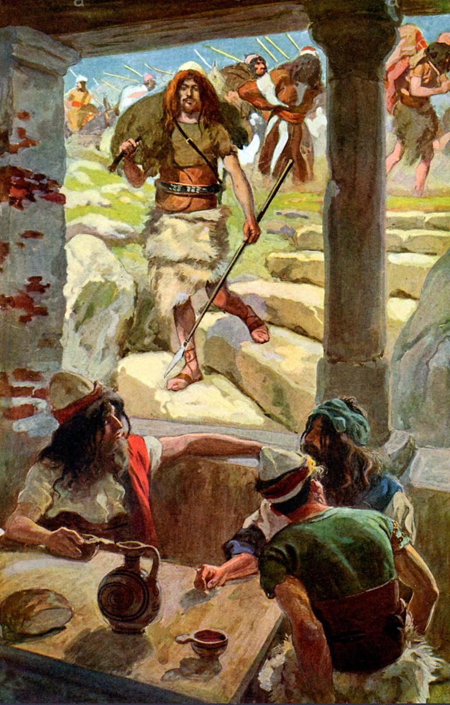

1 Samuel 27 — The Mister Translation

1 Samuel 27:9. Tissot illustrates the end of the verse, “and he would return and come to Achish”: David walks in from a raid with a spear and a bundle, and his men behind him carry the spoil on their backs. The three men at the table are Tissot’s; the chapter shows Achish only asking “Where did you raid today?” and believing the answer.

Translator's Notes — verse by verse
Said in his heart. “And David said in his heart”: el-libbo, the words of Jehovah after the flood, “and Jehovah said in his heart” (Genesis 8:21, already on these pages). What follows is not said to anyone. After the madness at Gath, “David laid these words in his heart, and was very afraid of Achish king of Gath” (21:13, already on these pages); now in his heart he decides to go back to the same king.
Swept away. “Now I shall be swept away one day by the hand of Saul”: essafeh, from safah (safah). At the hill of Hachilah David gave three ways Saul might die without his hand, and the last was “he will go down into battle and be swept away” (26:10, already on these pages). One verse later in the book he says the same verb of himself. The Greek has “I shall be added into the hands of Saul”, prostethēsomai, the verb it uses for yasaf, “to add”, in verse 4. The NWT 1984 has “Now I shall be swept away one day by Saul’s hand”; the KJV “I shall now perish one day by the hand of Saul”; the NIV “One of these days I will be destroyed by the hand of Saul”; the Douay “fall into the hands of Saul”; the TLB “Someday Saul is going to get me.”
Surely escape. “There is nothing good for me but that I should surely escape to the land of the Philistines … and I shall escape out of his hand”: himmalet immalet, the verb doubled, and ve-nimlatti at the end of the sentence (malat). It is the verb of every escape since the spear: “And David fled and escaped that night” (19:10); “and he went, and fled, and escaped” (19:12); “and escaped to the cave of Adullam” (22:1); “David had escaped from Keilah” (23:13, all already on these pages). Now the escape is out of the land. The two verbs of this verse, “swept away” and “escape”, stand together in the angels’ word to Lot: “Escape for your life! … Escape to the hills, or you will be swept away” (Genesis 19:17, already on these pages). The KJV has “that I should speedily escape into the land of the Philistines”; the NWT 1984 “that I should escape without fail to the land of the Philistines”; the NIV “The best thing I can do is to escape to the land of the Philistines.”
Despair. “And Saul will despair of me, of seeking me any more in all the territory of Israel”: ve-no’ash (no’ash). The word stands in four verses of the Hebrew Bible. The other three are the cry “It’s hopeless!”, once in Isaiah (57:10) and twice in Jeremiah, “But you said, ‘It’s hopeless!’” (Jeremiah 2:25) and “But they said, ‘Hopeless’” (Jeremiah 18:12, both already on these pages). Here it is said of a man: David counts on Saul giving up. The ASV has “and Saul will despair of me, to seek me any more in all the borders of Israel”; the Geneva “and that Saul may have no hope of me”; the NWT 2013 “then Saul will give up looking for me”.
Crossed over, with six hundred. “And David arose and crossed over, he and the six hundred men who were with him, to Achish son of Maoch, king of Gath”: va-ya’avor, the verb of the night before, when “David crossed over to the other side” of the valley from Saul’s camp (26:13, already on these pages). The first time he came to Achish he came alone, “and came to Achish king of Gath” (21:11); now he brings the six hundred of Keilah (23:13, both already on these pages) (Achish; Gath). The name Maoch stands in one verse of the Hebrew Bible, this one; in Solomon’s day the king of Gath is “Achish son of Maacah” (1 Kings 2:39). The Greek has “Anchous son of Ammach”. The NIV has “Achish son of Maok king of Gath”; the Douay “to Achis the son of Maoch, king of Geth”.
Each man and his household. “He and his men, each man and his household”: ish u-veito, the words of Israel going down into Egypt, “each man and his household came” (Exodus 1:1, already on these pages). The band is no longer six hundred men in the strongholds; it is a settlement of families, living under a foreign king. The ASV has “every man with his household”; the NIV “Each man had his family with him”.
His two wives. “David and his two wives, Ahinoam the Jezreelitess, and Abigail the wife of Nabal, the Carmelitess”: the two women of the end of chapter 25, “and the two of them became his wives” (25:43, already on these pages) (Ahinoam; Abigail). Ahinoam is named for Jezreel in Judah, and Abigail is still named for her first husband, though Nabal is dead. Both will be taken captive when the Amalekites burn Ziklag (30:5). The ASV has “Ahinoam the Jezreelitess, and Abigail the Carmelitess, Nabal’s wife”; the NIV “Abigail of Carmel, the widow of Nabal”; the NWT 2013 “Nabal’s widow”.
He did not seek him any more. “And it was told to Saul that David had fled to Gath; and he did not seek him any more”: ve-lo yasaf od le-vaqsho, literally “he did not add any more to seek him”. The written text spells the verb yosif and the reading tradition yasaf (ketiv and qere); the sense is the same. It is what David said in his heart in verse 1, “seeking me any more”, with the same od: what he foresaw happens in three verses. Until now “Saul sought him all the days” (23:14, already on these pages). The KJV has “and he sought no more again for him”; the NWT 1984 “and so he did not go looking for him still another time”; the NIV “he no longer searched for him”; the TLB “so he quit hunting for him”.
The royal city. “Let them give me a place in one of the towns of the country, and let me stay there; for why should your servant stay in the royal city with you?”: arei ha-sadeh, the towns of the open country, against ir ha-mamlakhah, the city of the kingdom. “The royal city” in the singular stands in one verse of the Hebrew Bible, this one; the plural is Gibeon’s measure, “a great city, like one of the royal cities” (Joshua 10:2, already on these pages). David asks to live away from the king’s eyes, and the verses that follow show why. The NIV has “in one of the country towns”; the KJV “in some town in the country”; the Geneva “in the head city of the kingdom”; the TLB “instead of here in the royal city”.
Ziklag, to this day. “And Achish gave him Ziklag on that day; therefore Ziklag has belonged to the kings of Judah to this day” (Ziklag). The town is in Judah’s list (Joshua 15:31) and again in Simeon’s, inside Judah’s portion (Joshua 19:5, both already on these pages); here a Philistine king gives it away. “The kings of Judah” is said from a later day: the sentence knows of kings of Judah as distinct from the kings of Israel, which belongs to the time after Solomon. It is David’s home for the rest of 1 Samuel, and he is there when the news of Saul’s death comes (2 Samuel 1:1, already on these pages). The ASV has “wherefore Ziklag pertaineth unto the kings of Judah unto this day”; the NIV “and it has belonged to the kings of Judah ever since”; the TLB “(which still belongs to the kings of Judah to this day)”.
A year and four months. “And the number of the days that David stayed in the country of the Philistines was a year and four months”: the Hebrew says yamim ve-arba’ah chodashim, “days and four months” (yamim). “Days” is the year’s round, as in Elkanah’s pilgrimage “year by year” and “the yearly sacrifice” (1:3, 21; 2:19, all already on these pages). The Greek has only “four months”, and so do the Douay, “was four months”, and the Geneva, “was four months and certain days”. The ASV has “was a full year and four months”; the NWT 1984 “came to be a year and four months”.
The country of the Philistines. Bi-sedeh Felishtim. The phrase stands in three verses of the Hebrew Bible: verse 7 and verse 11 of this chapter, and the line that opened the ark’s captivity, “And the ark of Jehovah was in the country of the Philistines seven months” (6:1, already on these pages). The ark stayed seven months and came home; David stays sixteen.
Raided. “And David and his men went up and raided”: va-yifshetu, from pashat (pashat), the verb of the messenger’s word that called Saul away from the mountain in the wilderness of Maon, “the Philistines have made a raid on the land!” (23:27, already on these pages). It is the raider’s verb: the Chaldeans who “made a raid on the camels” of Job (Job 1:17), and the Amalekites who will raid Ziklag while David is away (30:1, 14, both yet to come in this translation). The ASV has “and made a raid upon the Geshurites”; the KJV “and invaded the Geshurites”; the Douay “and pillaged Gessuri”.
The Geshurite. Ha-Geshuri, singular like “the Kenite” and “the Amalekite” of chapter 15 (15:6, already on these pages) (the Geshurites). These are the southern Geshurites, named beside the Philistines in the land Joshua left unconquered, “all the regions of the Philistines, and all the Geshurite” (Joshua 13:2, already on these pages), not the Geshur east of the Jordan whose king will give David a wife (2 Samuel 3:3).
The Girzite, or the Gizrite. The written text has ha-Girzi, and the reading tradition ha-Gizri (ketiv and qere). Neither form of the name is found in any other verse of the Hebrew Bible, and the Greek names only “the Gesirites” and the Amalekites. This translation prints the reading, as it did with “the king’s spear” at 26:22 (already on these pages). The KJV follows the reading, “and the Gezrites”; the ASV, the NIV and the NWT 1984 follow the written text, “the Girzites”. Some readers connect the reading with the town of Gezer; others take the Girzites as a people known only from this verse (Girzites).
From of old, as you come to Shur. “For these were the inhabitants of the land from of old, as you come to Shur, and as far as the land of Egypt”: bo’akha Shurah, the phrase of Saul’s war, “And Saul struck Amalek from Havilah as you come to Shur, which faces Egypt” (15:7, already on these pages) (Shur; Amalek). The Amalekites Saul struck are still there to be raided. “From of old” is me-olam (olam). The Greek reads a place here, “from Gelampsour”, and the NWT 1984 prints a place, “Telam”, in the words “for they were inhabiting the land that [extended] from”; those who read a place compare Telaim, where Saul mustered the people against Amalek (15:4), and Telem among Judah’s southern towns (Joshua 15:24, both already on these pages). The KJV has “for those nations were of old the inhabitants of the land”; the NIV “From ancient times these peoples had lived in the land extending to Shur and Egypt.”
Would strike, would take. “And David would strike the land, and would not let man or woman live; and he would take flock and herd”: ve-hikkah … ve-lo yechayeh … ve-laqach. The verbs are the forms Hebrew uses for what happens again and again, and the chapter is describing sixteen months of raids, not one. The NIV has “Whenever David attacked an area”; the NWT 2013 “When David would attack the land”; the KJV, like the ASV, makes it a single event, “And David smote the land”.
Not let man or woman live. Ve-lo yechayeh ish ve-ishah, from chayah in the form that means to keep alive: the verb of the law of the cities of the land, “you shall not let anything that breathes live” (Deuteronomy 20:16, already on these pages). The KJV has “and left neither man nor woman alive”; the NWT 1984 “but he preserved neither man nor woman alive”; the TLB “They didn’t leave one person alive”.
Flock and herd, donkeys and camels. The list is the list of chapter 15. Samuel’s charge was “put to death from man to woman, from child to suckling, from ox to sheep, from camel to donkey” (15:3), and Saul spared “the best of the flock and the herd” (15:9); Samuel asked him why he had “swooped on the spoil” (15:19). Saul’s sword at Nob went “from man to woman, from child to suckling, and ox and donkey and sheep” (22:19, all already on these pages). Here David kills the people and takes the animals and the clothes, and nothing in the text commands either; the narrator tells it without a word of judgment. The ASV has “and took away the sheep, and the oxen, and the asses, and the camels, and the apparel”; the NIV “but took sheep and cattle, donkeys and camels, and clothes”.
Where? “And Achish would say: ‘Where did you raid today?’”: al-pashattem ha-yom. Al is ordinarily the “not” of a wish or a command, and it makes no sense here as “do not”; readers take it as a question word, “where?” or “against whom?”, and some correct it. The Greek has “Against whom did you make an attack today?”, epi tina. The ASV has “Against whom have ye made a raid to-day?”; the KJV “Whither have ye made a road to day?”, where “road” is the old word for a raid, as in “inroad”; the Geneva “Where have ye been a roving this day?”; the Douay “Whom hast thou gone against to day?”
The Negev of Judah, of the Jerahmeelite and of the Kenite. David names the south of his own people (the Negev), and two clans who live in it. “The Jerahmeelite” stands in two verses of the Hebrew Bible: this one, and David’s gifts from the spoil of Amalek “to those in the cities of the Jerahmeelite, and to those in the cities of the Kenite” (30:29) (the Jerahmeelites). The Kenite went up with Judah into “the Negev of Arad” (Judges 1:16), and Saul warned him away from Amalek, “for you did kindness with all the sons of Israel” (15:6, both already on these pages) (the Kenites). Two of the three peoples David claims to have raided are among those he will later send presents to. The NIV has “Against the Negev of Judah”; the KJV “Against the south of Judah, and against the south of the Jerahmeelites, and against the south of the Kenites”. The Hebrew joins the three with “and”; the NWT 2013 makes them three different answers on three different days, “or”.
Lest they tell on us. “And David would not let man or woman live, to bring them to Gath, saying: ‘Lest they tell on us’”: pen-yaggidu alenu, from nagad, to tell. At Nob David saw Doeg the Edomite, and afterwards told Abiathar, “I knew on that day, when Doeg the Edomite was there, that he would surely tell Saul” (22:22, already on these pages). The man who was told on once now kills every witness who could tell. The ASV has “Lest they should tell of us”; the NIV “They might inform on us”; the Douay “Lest they should speak against us.”
Where the quotation ends. “So David did, and such was his practice all the days that he stayed in the country of the Philistines”: the Hebrew has no quotation marks, and the second half can belong to the report the survivors would have carried to Gath, or to the narrator. The KJV and the ASV keep it inside the report: the KJV has “and so will be his manner all the while he dwelleth in the country of the Philistines”, and the ASV “and so hath been his manner all the while he hath dwelt in the country of the Philistines”; the NWT 1984 sets it in brackets as the narrator’s, “(And this way has been his procedure all the days that he dwelt in the countryside”, and the NIV as a sentence of its own, “And such was his practice as long as he lived in Philistine territory.” This translation follows the second reading and closes the quotation after “So David did”. The Greek puts the first half in David’s own mouth, “I did not let man or woman live”.
His practice. Ve-kho mishpato, “and such was his mishpat” (mishpat): the word of “the priests’ due” at Shiloh (2:13) and of Samuel’s warning, “the due of the king who will reign over them” (8:9, both already on these pages), a settled way of doing things. The Greek has dikaiōma. The Douay has “and such was his proceeding”; the TLB “This happened again and again while he was living among the Philistines.”
Achish believed David. “And Achish believed David”: va-ya’amen Akhish be-David, from aman (he’emin), the verb of Abram, “And he believed Jehovah” (Genesis 15:6), and of Israel at the sea, “and they believed in Jehovah and in Moses his servant” (Exodus 14:31, both already on these pages). The Philistine king puts his trust in the man who has just lied to him, and the chapter ends on it. The KJV has “And Achish believed David”; the NIV “Achish trusted David”; the TLB “Achish believed David and thought that the people of Israel must hate him bitterly by now.”
A stench among his people. “He has surely made himself a stench among his people, in Israel”: hav’esh hiv’ish, the verb doubled, from ba’ash (ba’ash). It is Jacob’s word to Simeon and Levi after Shechem, “making me a stench to the inhabitants of the land” (Genesis 34:30), and the foremen’s to Moses and Aaron, “you have made us a stench in the eyes of Pharaoh” (Exodus 5:21). At Michmash “Israel has also become a stench to the Philistines” (13:4, all already on these pages); now a Philistine king believes David has become a stench to Israel. The NWT 1984 has “He has unquestionably become a stench among his people Israel”; the KJV “He hath made his people Israel utterly to abhor him”; the NIV “He has become so obnoxious to his people”; the Douay “He hath done much harm to his people Israel”. The Greek has “he is utterly put to shame among his people”.
A servant forever. “And he will be my servant forever”: le-eved olam. The words stand in three verses of the Hebrew Bible: the slave who will not go free, whose ear is put to the door with the awl, “and he shall be your slave forever” (Deuteronomy 15:17, already on these pages); this one; and Jehovah’s question to Job about the great sea-beast, “Will you take him for a servant forever?” (Job 40:28 in the Hebrew numbering). David called himself “your servant” in verse 5, and Achish takes him at his word. The KJV has “therefore he shall be my servant for ever”; the NWT 1984 “and he will have to become my servant to time indefinite”; the NIV “that he will be my servant for life”.
Patterns worth carrying forward
Where this translation keeps the exact, distinct words: “said in his heart” for amar el-libbo, as in Genesis 8:21; “swept away” for essafeh, as in 26:10; “surely escape” and “escape” for himmalet immalet and nimlat, as in 19:10–18, 22:1 and 23:13; “despair” for no’ash; “any more” for od, in verses 1 and 4; “the territory of Israel” for gevul Yisrael; “crossed over” for avar, as in 26:13; “each man and his household” for ish u-veito, as in Exodus 1:1; “the Jezreelitess” and “the Carmelitess”; “stayed” for yashav, in verses 3, 5, 7 and 11; “favour in your eyes”, as in 20:29; “the towns of the country” for arei ha-sadeh; “the royal city” for ir ha-mamlakhah; “to this day”; “a year” for yamim, as in 1:3 and 2:19; “the country of the Philistines” for sedeh Felishtim, as in 6:1; “raided” for pashat, as in 23:27; “the Gizrite”, the reading of ketiv “the Girzite”; “from of old” for me-olam; “as you come to Shur”, as in 15:7; “would not let … live” for lo yechayeh, as in Deuteronomy 20:16; “flock and herd”, as in 15:9; “the Negev”; “tell on us” for higgid, as in 22:22; “practice” for mishpat; “believed” for he’emin be-, as in Genesis 15:6 and Exodus 14:31; “a stench” for hiv’ish, as in Genesis 34:30 and 13:4; and “servant forever” for eved olam, as in Deuteronomy 15:17.
Echoes paid. David turning “swept away” on himself (26:10); “Escape for your life … or you will be swept away” (Genesis 19:17); the escapes of 19:10–18, 22:1 and 23:13; going over to Achish of Gath, and the six hundred (21:11–13; 23:13); “crossed over” (26:13); “Go, serve other gods” (26:19), answered by a move to a foreign land; the two wives (25:42–43); “Saul sought him all the days” (23:14); the ark in the country of the Philistines (6:1); the yearly sacrifice (1:3, 21; 2:19); Gibeon among the royal cities (Joshua 10:2); Ziklag in the lists of Judah and Simeon (Joshua 15:31; 19:5); the Philistine raid (23:27); the Geshurites beside the Philistines (Joshua 13:2); Telaim and Shur, Amalek and the Kenite, the list of animals and “swooped on the spoil” (15:3–19); Telem (Joshua 15:24); Nob (22:19); Doeg who would surely tell (22:22); the priests’ due and the due of the king (2:13; 8:9); the Kenite in the Negev of Arad (Judges 1:16); “It’s hopeless!” (Jeremiah 2:25; 18:12); Abram and Israel believing (Genesis 15:6; Exodus 14:31); a stench (Genesis 34:30; Exodus 5:21; 1 Samuel 13:4); and the servant forever (Deuteronomy 15:17).
Echoes planted. The Philistines gathering for war, and Achish’s “you will go out with me in the camp” (28:1–2); Achish’s trust tested by the Philistine commanders (29:3–10); the Amalekite raid on Ziklag, Ahinoam and Abigail taken captive, and the spoil sent to the cities of the Jerahmeelite and the Kenite (30:1–29); Achish son of Maacah in Solomon’s day (1 Kings 2:39); Talmai king of Geshur (2 Samuel 3:3); the Chaldean raiders (Job 1:17); Isaiah’s “It is hopeless” (Isaiah 57:10); and the servant forever of Job 40:28. None is translated here yet; Ziklag at the opening of 2 Samuel (2 Samuel 1:1) already is.
Next in this book: 1 Samuel 28 — “You will go out with me in the camp”: the Philistines gather their camps to fight Israel, and Achish takes David with him; Samuel is dead, and Saul has put the mediums out of the land; at Gilboa Jehovah does not answer him, by dreams or by Urim or by prophets, and he goes by night to a woman at En-dor.